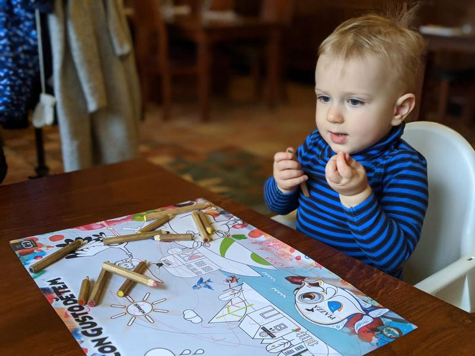
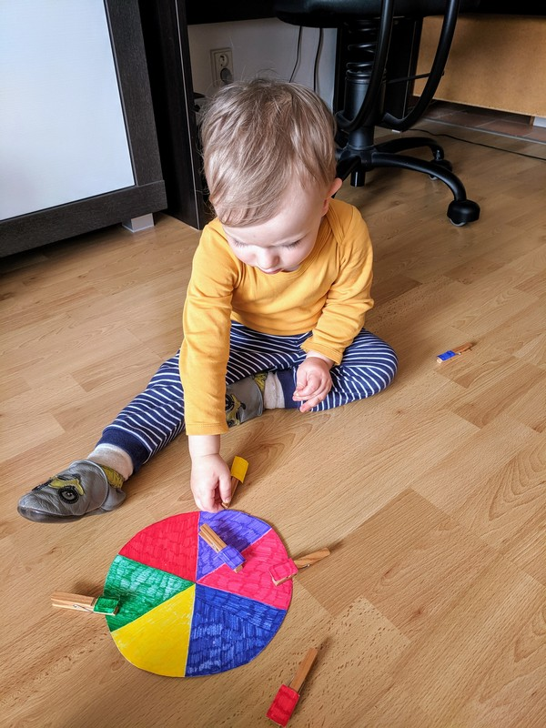

Tak jsem se zase téměř po roce dokopala k malému shrnujícímu příspěvku na téma O. a jeho pokroky. Od posledního článku je to naprosto neuvěřitelný skok v jeho mentálním vývoj, který mě prostě nepřestává bavit a fascinovat :-)
- Oli ve dvou letech nosí oblečení velikosti 92. Měří cca 88 cm a váží něco mezi 12 a 13 kily.
- Běhá a jezdí na odrážedle Puky jako drak. Taky jsme mu pořídili sedátko na kolo a od loňského léta tak doprovází Péťu na vyjížďkách jako spolujezdec a náramně si to užívá. Samozřejmě je ale taky právě v období, kdy zcela postrádá pud sebezáchovy, takže musím mít oči na stopkách prakticky nonstop.
- Přes den spí cca 2 hodiny po obědě (+- od 1 do 3), večer teď usíná mezi půl 9 a 9 a probouzí se mezi 6 a 7. Na noční spánek si naštěstí většinou stěžovat nemůžeme - bez problémů už prospí celou noc v kuse. Když se v noci vzbudí, vezmeme si ho k sobě a okamžitě zase usíná.
- Na Olího “žravosti” se od minula nic moc nezměnilo :-) Už dávno je výhodnější ho šatit než živit :D! Aktuálně má nejradši jogurty, veškeré druhy ovoce (včetně sušeného a kompotů), zeleninové polévky, cottage sýr, vajíčka, rýži a domácí pečivo (ehm, nad jeho konzumací “buchtiček”, jak on je nazývá, už přivírám oko). Přišel už na chuť i šunce, masu nebo čočce. Teď má aktuálně období, kdy se mu úplně nechce kousat a větší kousky např. zeleniny nebo slupky, které dosud bez problémů jedl, vyplivuje. Asi vzdor 8-) Na pití má nejčastěji dětský čaj (med a citron mu do něj dávám jen v zimním období nebo když si vyloženě řekne), ale má rád i obyčejnou vodu. Batolecí mléko jsem mu nikdy nedávala a dávat ani nebudu. Pořád zbožňuje náš domácí kefír.
- Už se dokáže celkem obstojně najíst sám - a to včetně tekutějších pokrmů jako jsou polévky nebo jogurt.
- Baví ho tvoření, malování a lepení samolepek.

- Někdy v prosinci se O. nadchnul pro vlaky a mašiny. Od té doby je to u nás doma naprostý fenomén a odráží se to i na nejoblíbenějších hračkách. Vláčkodráha je u nás stále v provozu, z dupla se staví mosty a tunely a místo Štístka a Poupěnky na Youtube sjíždíme videa s železničními přejezdy (nevěřili byste, kolik toho na Youtubu je :-O!)… A než vypukla karanténa, samozřejmě jsme stepovali každý týden na hlavním nádraží a mávali na vlaky :D. Docela by mě zajímalo, jak se tahle Olího záliba bude dál vyvíjet :D
- Naštěstí mu vydržela i vášeň pro knížky, které si spolu stále čteme každý den. Obrázková leporela teď už poměrně vytěsňují složitější příběhy (mimořádně oblíbená je např. knížka o Stephenu Hawkingovi od tety Terezky ;-) a velké oblibě se teď těší knihy na téma “barvy”.
- Když jsme u těch barev, O. už spolehlivě pozná jak všechny základní, tak nově i fialovou, růžovou, oranžovou nebo černou. Hodně k tomu přispělo podle mě i to, že jsme v únoru začali malovat prstovýma barvama, a pak taky tahle barevná škála s kolíčkama na prádlo, kterou jsem mu vyrobila. Obojí ho moc baví.

- Někdy na začátku roku začal sám od sebe zpívat i recitovat říkanky. Stejně jako když začal na podzim mluvit, i tohle přišlo ráz na ráz a jsem v šoku z toho, jak obrovský repertoár songů si pamatuje!
- Oli se výrazně rozmluvil někdy po 18. měsíci a osobně to považuju za vůbec největší milník v jeho vývoji - mnohem větší, než když třeba začal chodit. Od té doby, co se spolu dorozumíme, si mateřskou mnohem víc užívám. Jsem nadšená z toho, že mu něco vyprávím a on mi rozumí a zároveň už dokáže i reagovat. Všichni ho chválí, že na dvouleté dítě mluví opravdu mimořádně dobře a srozumitelně. Má bohatou slovní zásobu (aktivně používá třeba i slova jako “vodopád” nebo “cisterna”), používá synonyma (veliký, obrovský) a krásně skládá celé věty.
- Od začátku roku s ním zkouším čtení v angličtině, líbí se mu to a často si vybírá, jestli budeme číst “česky” nebo “anglicky” :-)
- Je to ovšem stále palice tvrdohlavá a v kombinaci s nastupujícím obdobím vzdoru je to někdy k zbláznění. Jakmile něco nemůže být po jeho nebo musíme z nějakého důvodu opustit činnost, do níž je aktuálně zapálený (házení kamínků do kanálu a podobně 8-), následuje hysterické válení po zemi a pláč. Je to každodenní zkouška mých nervů.
- Stejně tak nočník zarputile bojkotuje, úspěchy jsou minimální nebo se jedná o krátkodobé epizody a pak zase návrat k ignoraci. Nijak zvlášť to ale nehrotím a věřím, že brzo přijde správný čas k odplenkování.
- Život s Olím je mnohdy náročný, ale taky čím dál zábavnější. Baví mě pozorovat rozvoj jeho osobnosti a každý den se těším na jeho nové pokroky :-)